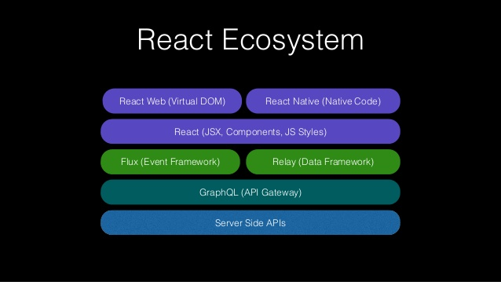

by Andrew MacKenzie
A quick introduction by Andrew MacKenzie
For Ottawa JS Meetup - Feb 10, 2016
GraphQL is a data query language and runtime designed and used at Facebook to request and deliver data to mobile and web apps since 2012.
Part of the Facebook tooling (really a loosely-coupled framework) to solve some of the business/scale issues Facebook sees deploying their Web and Mobile applications.
If you want an introduction, let me know: amackenzie@kinaxis.com or a.mackenzie@gmail.com